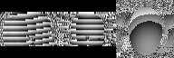
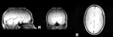
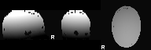
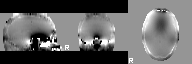

Making Fieldmap Images for FEAT |
The first step in practice is to find out what kind of fieldmap acquisition data you can get from the scanner, operator or reconstruction software. There are three main types:
If the images from the scanner are in ANALYZE or NIFTI form then you
can determine their type, use fslinfo. If not,
you must convert to either ANALYZE or NIFTI format before
progressing. See
the FSL
FAQ for information about conversion.
When fslinfo is run it will display a datatype
string or number (the value 32 represents a complex image). You can
convert a complex image into its phase and magnitude components by
using fslcomplex or, alternatively, leave it in this
format. The number of images contained in each file is shown as the
dim4 value.
To further check what sort of images you have, use slices
to display the image and then see which of the following images it
most closely resembles. Note that for complex images, slices will
display two separate images - one phase and one magnitude. If you
only have a single image (dim4=1) then it is possible that it has
already been reconstructed fully into a fieldmap.
Typical complex images


A phase image (wrapped)
A phase image (unwrapped and masked)

A magnitude image
A real fieldmap image (masked)

Note that the fieldmap image contains structure and shows substantial inhomogeneities mainly in the inferior regions of the brain.
It is most common to have wrapped phase and magnitude images (case 2 below). If the images appear to have unwrapped phase then the the PRELUDE stage (step 3) should be skipped. However, if the range of values within the image is within 2 pi radians (6.28) then it is likely that there are wraps present (even if they are hard to find by eye) and so, in this case, PRELUDE should still be run.
Once you have determined the type, you need to do some or all of the following steps. As a guide (and this may vary in some cases) the steps that are required are:
Step 1 - Getting the magnitude image
(a)
If you start with a complex Analyze or Nifti volume that contains
the scans at two echo times then you need to do:
fslcomplex -realabs complex_acq fieldmap_mag
(b) If you have separate phase images or a single, fieldmap image, then you need to also get a magnitude image that is (i) undistorted and (ii) registered with this phase/fieldmap image. Usually the sequence used to acquire the phase or fieldmap image also contains data that can give you this magnitude image. Check with your scanner operator, physicists and/or analysis people as to how to reconstruct this image - often it just requires extraction from the original DICOM or vendor-specific format.
(c)
Check that the magnitude image and the phase/fieldmap images have
the same resolution. You can do this by looking at the dim and pixdim
entries (only the first three of each) as reported by fslinfo.
If they are not the same then they must be resampled to be equal.
In this case choose the one with the best resolution and use this as
a reference image in flirt with the -applyxfm
option to resample the other images.
For example, if the magnitude image has a better resolution (smaller
pixdims) then do the following:
flirt -in original_phase0 -ref fieldmap_mag -applyxfm -out orig_phase0 flirt -in original_phase1 -ref fieldmap_mag -applyxfm -out orig_phase1
Once this is done, check that the output images (e.g. orig_phase0) have
the same dimensions and resolution as the reference (using fslinfo)
and also check that they are aligned correctly by loading both
the output and reference images into fslview and visually
inspecting them.
Step 2 - Getting (wrapped) phase in radians
(a)
If you have complex volumes then do:
fslcomplex -realphase complex_acq phase0_rad 0 1 fslcomplex -realphase complex_acq phase1_rad 1 1These phase volumes will now be in radians.
(b)
If you have seperate phase volumes that are in integer format then do:
fslmaths orig_phase0 -mul 3.14159 -div 2048 phase0_rad -odt float fslmaths orig_phase1 -mul 3.14159 -div 2048 phase1_rad -odt floatNote that the value of 2048 needs to be adjusted for each different site/scanner/sequence in order to be correct. The final range of the phase0_rad image should be approximately 0 to 6.28. If this is not the case then this scaling is wrong.
If you have separate phase volumes are not in integer format, you
must still check that the units are in radians, and if not scale
them appropriately using fslmaths.
Step 3 - Unwrapping the phase images
Use PRELUDE to do the required phase unwrapping
prelude -a fieldmap_mag -p phase0_rad -o phase0_unwrapped_rad prelude -a fieldmap_mag -p phase1_rad -o phase1_unwrapped_rad
Step 4 - Getting the fieldmap in rad/s
(a)
For separate phase images do:
fslmaths phase1_unwrapped_rad -sub phase0_unwrapped_rad -mul 1000 -div TE fieldmap_rads -odt floatwhere TE must be replaced with the appropriate difference in echo times (in units of milliseconds).
(b) If you have a single, real fieldmap then you must determine the units of this fieldmap (ask an operator/physicist) and rescale to radians per second if it is not already in these units. Common other units are (i) Hz (scale these by 6.28 to get rad/s) and (ii) Telsa (scale these by 2.68e8 to get rad/s).
Step 5 - Regularising the fieldmap
Fieldmaps can often be noisy or be contaminated around the edges of
the brain. To correct for this you can regularise the fieldmap using
fugue. Note that the "best" regularisation will depend
on many factors in the acquisition and must be determined separately for
each site/scanner/sequence. Look at the fieldmap (e.g. using fslview) to decide what is the best regularisation to use - which could also be to do no regularisation.
Some regularisation options are - Gaussian smoothing, despiking and median filtering.
Examples of these (in order) are:
fugue --loadfmap=fieldmap_rads -s 1 --savefmap=fieldmap_rads fugue --loadfmap=fieldmap_rads --despike --savefmap=fieldmap_rads fugue --loadfmap=fieldmap_rads -m --savefmap=fieldmap_rads